Kapitel 5 Stichprobentests
5.1 Nominalskalierte Größen
Chi-Quadrat-Test (\(\chi^2\)-Test):
Der \(\chi^2\)-Test ist einer der grundlegenden statistischen Tests zum Vergleich von nominalskalierten Kategorien, z.B.
- biologisches Geschlecht: Frauen vs. Männer;
- Größe: klein vs. groß;
- Texte: Text A vs. Text B vs. Text C …
Mit dem \(\chi^2\)-Test testen wir, ob eine beobachtete Verteilung der Daten der erwarteten Verteilung entspricht. Der Test funktioniert auf allen Skalenniveaus. Es gibt aber verschiedene Anwendungsspielarten:
- als Anpassungstest (z.B. ist ein Merkmal normalverteilt?);
- als Homogenitätstest (z.B. ähneln sich Frauen und Männer bezüglich eines Merkmals, etwa ob sie rauchen oder nicht?);
- als Unabhängigkeitstest (z.B. ist der Dieselverbrauch unabhängig von elektronischer Regulierung des Motors oder nicht?).
Ein Beispiel aus einem empfehlenswerten Video aus Kurzes Tutorium Statistik, in dem der \(@chi³2\)-Test und seine Anwendungen erklärt werden. Im Beispiel geht es um den \(@chi³2\)-Anpassungstest:
Eine Firma verkauft Armbanduhren in vier Farben (blau, grün, gelb, rot). Im letzten Monat wurden 1000 Stück verkauft. Ein Verkaufsleiter behauptet, dass die Nachfrage nach der Uhr in allen vier Farben gleich gut sei. Das können wir mit dem \(\chi^2\)-Test überprüfen. Wenn die Behauptung des Verkaufsleiters stimmt, dann erwarten wir, dass 250 blaue Uhren, 250 grüne Uhren, 250 gelbe Uhren und 250 rote Uhren verkauft wurden - dass also Gleichverteilung der erwarteten Häufigkeiten vorliegt (250 + 250 + 250 + 250). Also ein Viertel der verkauften Uhren war blau, ein Viertel war gelb, ein Viertel war rot und ein Viertel war grün.
Wären die (beobachteten) Verkaufszahlen im vergangenen Monat (unserer Stichprobe) 245 + 252 + 254 + 249, dann würde der \(@chi^2\)-Test bestätigen, dass Gleichverteilung der Uhrfarben vorliegt und damit die Hypothese \(H_0\) bestätigen. Die Unterschiede sind ja gering. Wenn aber die beobachteten Verkaufszahlen in unserer Stichprobe 60 + 320 + 100 + 520 wären, dann würde der \(@chi^2\)-Test die Gleichverteilung der Farben nicht bestätigen und die Nullhypothese \(H_0\) verwerfen.
Die Statistikexpertin erhält vom Verkaufsleiter die tatsächlichen Verkaufszahlen: 300 blaue Urhen + 200 gelbe Uhren + 400 rote Uhren + 100 grüne Uhren wurden im vergangenen Monat verkauft. Kann man das noch immer als Gleichverteilung der Farben auffassen?
Wir verwenden die folgende Teststatistik:
- Wir subtrahieren die jeweilige erwartete Häufikgeit von der beobachteten und erhalten somit Differenzen;
- dann quadrieren wir jede Differenz, so dass wir nur mit positiven Zahlenwerten zu tun haben;
- dann dividieren wir jede der quadrierten Differenzen mit der erwarteten Häufigkeit (hier: 250) und erhalten somit Quotienten;
- dann addieren wir die Quotienten und erhalten somit den empirischen \(@chi^2\)-Wert (im Beispiel beträgt dieser 200).
\[ \frac{(300 - 250)^2}{250} + \frac{(200 - 250)^2}{250} + \frac{(400 - 250)^2}{250} + \frac{(100 - 250)^2}{250} = 200 = \chi^2_{empirisch} \]
Das Test- oder Signifikanzniveau (auch Irrtumswahrscheinlichkeit genannt) wird gewöhnlich auf 5% festgelegt (p = 0,05). Die Wahrscheinlichkeit, dass wir fälschlicherweise die Nullhypothese verwerfen, soll demnach bei diesem Testniveau höchstens 5% betragen.
Da die Warscheinlichkeit ein Viertel pro Uhrfarbe beträgt (250 von 1000; siehe oben), liegt eine Binomialverteilung vor. Bei ausreichend großen Stichproben (wie der hier vorliegenden) kann man diese durch die Normalverteilung ersetzen. Mit der Normalverteilung lässt sich einfacher rechnen.
Da wir in unserer Teststatistik die erwarteten Häufigkeiten von den beobachteten abziehen und danach dividieren, wird die Normalverteilung zum Nullpunkt des Koordinatensystems verschoben. Die Werte der Teststatistik werden durch diesen Rechenvorgang normalisiert.
Durch Quadrieren der Differenzen erreichen wir, dass wir keine negativen Werte mehr erhalten können. Alle Werte sind damit positiv und befinden sich im ersten Quadranten des Koordinatensystems. Da wir mehrere Terme addieren (hier sind es 4) und damit potentiell mehrere Zufallsvariablen in die Summe einbeziehen, kann die Verteilungskurve verschiedene Formen annehmen. Das Ergebnis ist eine \(\chi^2\)-Verteilung. Diese Verteilung sagt uns, welche Werte die Teststatistik mit welcher Wahrscheinlichkeit annehmen wird, wenn die Nullhypothese \(H_0\) stimmt. Danach sind die Werte in der Nähe des Koordinatenursprungs (der Null) wahrscheinlich. Die meisten Werte unserer Teststatistik sollten gemäß der Nullhypothese in diesem Bereich, dem Annahmebereich, liegen. Werte, die weit entfernt von der Null (dem Koordinatenursprung) vorkommen, sind weniger wahrscheinlich. Sie liegen im Ablehnungsbereich (Verwerfungsbereich).
Eine grundlegende Bedingung für die Anwendung des \(\chi^2\)-Tests ist, dass die erwarteten Häufigkeiten nicht kleiner als fünf sein dürfen: \(Freq_{erwartet}\geq{5}\). In unserem Beispiel ist das der Fall (hier: 250).
In unserem Beispiel haben wir vier Summenterme, die die Gesamtsumme 1000 (Uhren) ergeben müssen. Die ersten drei Summen könnten vom Zufall abhängen, die letzte ist dagegen immer die Differenz zur Gesamtsumme (hier: 1000). In unserem Beispiel gibt es demnach nur drei Größen (Summen), die frei variieren können. In unserem Beispiel liegen demnach drei Freiheitsgrade vor. Das ist notwendig zu wissen, falls man (noch) mit Tabellen arbeitet und wenn man sich sicher sein möchte, dass man den Test richtig durchgeführt hat. Bei drei Freiheitsgraden und einem Signifikanzniveau von 5% beträgt der kritische \(\chi^2\)-Wert (Schwellenwert für die Annahme bzw. Ablehnung der Nullhypothese) etwa 7,815. Wenn die Nullhypothese stimmt, dann beträgt unsere Teststatistik mit 95%-iger Wahrscheinlichkeit höchstens 7,815. Unser empirischer \(\chi^2\)-Wert beträgt jedoch 200 und ist damit größer als der Schwellenwert (kritische Wert). Das bedeutet, dass wir die Nullhypothese verwerfen und die alternative Hypothese \(H_1\) annehmen.
Zusammenfassung
Frage: Werden die Uhrfarben gleichhäufig verkauft?
Hypothese \(H_0\): Die Farben werden gleichhäufig verkauft.
Hypothese \(H_1\): Die Farben werden NICHT gleichhäufig verkauft.
Testverteilung: \(\chi^2\)-Verteilung.
Testniveau: \(\alpha = 5%\)
Teststatistik:
\[ \chi^2_{emp} = \Sigma{\frac{(Freq_{beobachtet} - Freq_{erwartet})^2}{Freq_{erwartet}}} \]
Ergebnis (im obigen Beispiel):
Die Nachfrage nach den verschiedenfarbigen Uhren ist NICHT gleichmäßig verteilt: \(\chi^2_{empirisch} > \chi^2_{erwartet}\) bei 3 Freiheitsgraden und 5%-iger Irrtumswahrscheinlichkeit. Wir lehnen die Nullhypothese damit ab und akzeptieren die alternative Hypothese.
5.1.1 Lange und kurze Kommentare
Die Verwendung des \(@chi³2\)-Tests im sprachlichen Bereich wollen wir zunächst am Beispiel eines erfundenen Datensatzes kennen lernen.
| neugeschriebener_satz | kurzer_kommentar_a | ausf_a_lhrlicher_kommentar |
|---|---|---|
| inkorrekt | 13 | 29 |
| korrekt | 67 | 55 |
Im Datensatz wird zwischen langen und kurzen Kommentaren einer Lehrerin unterschieden und die jeweilige Anzahl sprachlicher Fehler von Schülern in ihren Aufsätzen. Geklärt werden soll die Frage, welche Wirkung lange und kurze Kommentare der Lehrerin auf die Anzahl der sprachlichen Fehler hatten.
5.1.1.1 Programme
library(tidyverse)
library(janitor)
library(scales)
library(rmarkdown)
library(kableExtra)5.1.1.2 Kurzversion:
Wie sinnvoll sind lange bzw. kurze Kommentare einer Lehrerin zu sprachlichen Fehlern in Essays?
library(tidyverse)
library(janitor)
# Datei laden und die Variablennamen vereinheitlichen
kommentare = read.delim("data/chisq_kommentare.txt", sep = "\t") %>%
clean_names()
head(kommentare)## neugeschriebener_satz kurzer_kommentar_a ausf_a_lhrlicher_kommentar
## 1 inkorrekt 13 29
## 2 korrekt 67 55library(janitor)
# Chi-Quadrat-Test
chisq.test(kommentare[,-1])##
## Pearson's Chi-squared test with Yates' continuity correction
##
## data: kommentare[, -1]
## X-squared = 6.2551, df = 1, p-value = 0.01238Ergebnis: Wir verwerfen die Hypothese H0 und nehmen die Hypothese H1 an: zwischen kurzen und langen Kommentaren besteht ein nicht zufälliger Unterschied.
5.1.1.3 Längere Version
5.1.1.3.1 Datei laden
Eine Lehrerin möchte wissen, ob es effektiver ist, wenn sie am Rand der Schüleressays kurze oder ausführlichere Kommentare zu den Fehlern der Schüler_innen notiert. Sie vergleicht somit zwei Schülergruppen (Schüler_innen mit kurzen vs. langen Kommentaren) und zwei Beurteilungskategorien (korrekte vs. inkorrekte Äußerungen in den Essays).
library(tidyverse)
# von github laden
kommentare = read.delim(
"https://raw.githubusercontent.com/tpetric7/tpetric7.github.io/main/data/chisq_kommentare.txt",
sep = "\t", fileEncoding = "UTF-8")
library(janitor)
# Variablennamen konsequent schreiben
kommentare = kommentare %>%
clean_names()
# Von der Festplatte laden
kommentare = read.delim("data/chisq_kommentare.txt", sep = "\t", fileEncoding = "UTF-8") %>%
clean_names()
head(kommentare) %>% knitr::kable()| neugeschriebener_satz | kurzer_kommentar | ausfuhrlicher_kommentar |
|---|---|---|
| inkorrekt | 13 | 29 |
| korrekt | 67 | 55 |
5.1.1.3.2 Chi-Quadrat-Test
Stichproben: kurzer Kommentar vs. langer Kommentar
- H0: Zwischen den beiden Stichproben besteht kein signifikanter Unterschied (Unterschiede zufällig).
- H1: Zwischen den beiden Stichproben besteht ein signifikanter Unterschied (Unterschiede nicht zufällig).
library(janitor)
chisq.test(kommentare[,-1])##
## Pearson's Chi-squared test with Yates' continuity correction
##
## data: kommentare[, -1]
## X-squared = 6.2551, df = 1, p-value = 0.01238Wir verwerfen H0 und nehmen H1 an: zwischen kurzen und langen Kommentaren besteht ein nicht zufälliger Unterschied.
5.1.1.3.3 Graphische Darstellung
library(tidyverse)
library(scales)
kom_lang = kommentare %>%
as_tibble() %>%
pivot_longer(kurzer_kommentar:ausfuhrlicher_kommentar,
names_to = "Kommentar",
values_to = "Fehler") %>%
mutate(pct = Fehler/sum(Fehler))
kom_lang %>% knitr::kable()| neugeschriebener_satz | Kommentar | Fehler | pct |
|---|---|---|---|
| inkorrekt | kurzer_kommentar | 13 | 0.0792683 |
| inkorrekt | ausfuhrlicher_kommentar | 29 | 0.1768293 |
| korrekt | kurzer_kommentar | 67 | 0.4085366 |
| korrekt | ausfuhrlicher_kommentar | 55 | 0.3353659 |
kom_lang %>% ggplot(aes(Kommentar, pct, fill = neugeschriebener_satz)) +
geom_col(position = "dodge") +
scale_y_continuous(labels = percent_format()) +
labs(x = "Neugeschriebener Satz", y = "",
title = "Wirksamkeit kurzer und langer Kommentare")
5.1.2 Plural von Kunstwörtern
5.1.2.1 Naložimo programe
library(tidyverse)
library(scales)
library(kableExtra)5.1.2.2 Preberemo podatkovni niz z diska
# Branje datoteke je možno na več načinov
plural_subj1 = read.csv("data/plural_Subj_sum.csv", sep = ";")
plural_subj1 = read.csv2("data/plural_Subj_sum.csv")
plural_subj1 = read_csv2("data/plural_Subj_sum.csv")
# Pokaži prvih šest vrstic
head(plural_subj1) %>% knitr::kable()| SubjID | WordType | Genus | Sigstark | En | E | Er | S | Z |
|---|---|---|---|---|---|---|---|---|
| 1 | NoRhyme | Fem | 4.983333 | 8 | 4 | 0 | 0 | 0 |
| 1 | NoRhyme | Masc | 4.600000 | 6 | 6 | 0 | 0 | 0 |
| 1 | NoRhyme | Neut | 5.366667 | 10 | 2 | 0 | 0 | 0 |
| 1 | Rhyme | Fem | 3.836667 | 3 | 8 | 0 | 0 | 1 |
| 1 | Rhyme | Masc | 4.153333 | 5 | 5 | 1 | 0 | 1 |
| 1 | Rhyme | Neut | 3.784167 | 3 | 7 | 1 | 0 | 1 |
5.1.2.3 Povzetek in Hi-kvadrat test
Podatkovni niz preoblikujemo in povzemamo (agregacija). Za preizkus ustvarimo tabelo 2 x 2 z opazovanimi pogostnostmi (frekvencami). Program izračuna pričakovane pogstnosti in zatem še ocenjuje, ali je razlika med vzorcema statistično značilna.
H0: Preizkusne osebe uporabljajo množinske pripone ne glede na besedni tip (Rhyme / Non-Rhyme).
H1: Preizkusne osebe uporabljajo množinske pripone z ozirom na besedni tip (Rhyme / Non-Rhyme).
Če je p-vrednost < 0,05 (tj. 5%), potem obvelja H1: razlika med opazovanimi in pričakovanimi pogostnostmi je statistično značilna (tj. da ni naključna in dovolj velika ob upoštevanju napake).
Če p > 0,05, potem obdržimo H0: razlika med opazovanimi pogostnostmi je naključna.
# Povzemamo ("aggregate")
# Ergebnisse summieren
p = plural_subj1 %>%
group_by(WordType) %>%
summarise(Sigstark = mean(Sigstark),
En = sum(En), E = sum(E), Er = sum(Er), S = sum(S), Z = sum(Z))
# izpis tabele
knitr::kable(p)| WordType | Sigstark | En | E | Er | S | Z |
|---|---|---|---|---|---|---|
| NoRhyme | 4.087337 | 1528 | 2169 | 302 | 307 | 26 |
| Rhyme | 3.916109 | 1425 | 2172 | 561 | 244 | 14 |
# Izberemo tri stolpce
q = p %>% select(WordType, E, S)
# Razlika med deleži množinskih pripon E in S (npr. Bal-e oder Bal-s)
chisq.test(q[,-1]) # prvi stolpec naj se ne upošteva, zato [, -1]##
## Pearson's Chi-squared test with Yates' continuity correction
##
## data: q[, -1]
## X-squared = 6.2424, df = 1, p-value = 0.012475.1.2.4 Naslednji preizkus(i)
# Izberemo tri stolpce za naslednji preizkus
q = p %>% select(WordType, E, Er)
# Razlika med deleži množinskih pripon E in Er (npr. Bal-e oder Bal-er)
chisq.test(q[,-1]) # prvi stolpec naj se ne upošteva, zato [, -1]##
## Pearson's Chi-squared test with Yates' continuity correction
##
## data: q[, -1]
## X-squared = 64.106, df = 1, p-value = 1.179e-155.1.2.5 Tabela 2 x 3
Možno je tudi testiranje treh ali več vzorcev, vendar nam test ne pove, kateri vzorec je različen od drugega.
# Izberemo tri stolpce za naslednji preizkus
q = p %>% select(WordType, Er, E, S)
# Razlika med deleži množinskih pripon E in Er (npr. Bal-e oder Bal-er)
chisq.test(q[,-1]) # prvi stolpec naj se ne upošteva, zato [, -1]##
## Pearson's Chi-squared test
##
## data: q[, -1]
## X-squared = 78.148, df = 2, p-value < 2.2e-165.1.2.6 Zweite Version
Ergebnisse summieren:
(p = plural_subj1 %>%
group_by(WordType) %>%
summarise(En = sum(En), E = sum (E))
)## # A tibble: 2 x 3
## WordType En E
## <chr> <dbl> <dbl>
## 1 NoRhyme 1528 2169
## 2 Rhyme 1425 2172Chi-Quadrat-Test Falls p < 0,05: es gilt H1 (Stichproben unterscheiden sich). Falls p > 0,05: es gilt H0 (kein Unterschied zwischen Stichproben).
(chi = chisq.test(p[,-1])
)##
## Pearson's Chi-squared test with Yates' continuity correction
##
## data: p[, -1]
## X-squared = 2.1535, df = 1, p-value = 0.1422Beobachtete vs. erwartete Werte:
tabelle <- as_tibble(cbind(chi$observed, chi$expected)) %>%
# Spalte wieder hinzufügen
mutate(Wordtyp = unlist(p[,1])) %>%
# auf deutsch
mutate(Wordtyp = str_replace(Wordtyp, "NoRhyme", "Nicht-Reimwort"),
Wordtyp = str_replace(Wordtyp, "Rhyme", "Reimwort")) %>%
# erwartete Werte, wenn H0 richtig ist
rename(En_erwartet = V3, E_erwartet = V4) %>%
# Reihenfolge der Variablen verändern
select(Wordtyp, En, E, En_erwartet, E_erwartet)
tabelle %>% rmarkdown::paged_table()5.1.3 Modalkonstruktionen (morati vs. treba)
5.1.3.1 Packages
library(tidyverse)
library(scales)
library(janitor)
library(readxl)5.1.3.2 Datei laden
Gigafida: Gebrauchsfrequenzen (Tokenfrequenzen) der Modalkonstruktionen
“morati + Infinitiv” und
“biti + treba + Infinitive.”
naklonska <- read_xlsx("data/morati_treba.xlsx") %>%
clean_names()
naklonska## # A tibble: 2 x 3
## vrsta_besedila treba morati
## <chr> <dbl> <dbl>
## 1 Časniki 550572 1501540
## 2 Drugo 169349 530345Die zweite Tabelle zeigt die Distribution der beiden Modalkonstruktionen in fünf Funktionalstilen.
naklonska2 <- read_xlsx("data/morati_treba.xlsx",
sheet = "List2") %>% clean_names()
naklonska2## # A tibble: 5 x 3
## vrsta_besedila treba morati
## <chr> <dbl> <dbl>
## 1 Časopisi 389479 1086280
## 2 Revije 161093 415260
## 3 Internet 124996 376433
## 4 Stvarna besedila 30998 98981
## 5 Leposlovje 13355 54931Die Modalkonstruktion “morati + Infinitiv” wird ca. dreimal so häufig verwendet wie “biti + treba + Infinitiv.”
5.1.3.3 Graphische Darstellung
Die graphischen Darstellungen zeigen eher geringe Distributionsunterschiede.
naklonska %>%
pivot_longer(treba:morati, names_to = "konstruktion",
values_to = "freq") %>%
ggplot(aes(konstruktion, freq, fill = vrsta_besedila)) +
geom_col(position = "fill") +
scale_y_continuous(labels = percent_format()) +
labs(x = "Modalkonstruktion", y = "Gebrauchsfrequenz",
fill = "Vrsta besedila")
Die Modalkonstruktion “morati + Infinitiv” scheint in den alltagssprachlich näherstehenden Funktionalstilen Belletristik (leposlovje), Internet und Sachtexten (stvarna besedila) etwas häufiger belegt zu sein als die Modalkonstruktion “biti + treba + Infinitiv,” dafür aber in Zeitungen (Časopisi) etwas seltener.
naklonska2 %>%
pivot_longer(treba:morati, names_to = "konstruktion",
values_to = "freq") %>%
ggplot(aes(konstruktion, freq, fill = vrsta_besedila)) +
geom_col(position = "fill") +
scale_y_continuous(labels = percent_format()) +
labs(x = "Modalkonstruktion", y = "Gebrauchsfrequenz",
fill = "Vrsta besedila")
5.1.3.4 Chi-Quadrat-Test
Annahme: Die Modalkonstruktion “morati + Infinitiv” ist weniger markiert als die Modalkonstruktion “biti + treba + Infinitiv.” Formael und semantische Begründungen: … H0: Die beiden Modalkonstruktionen kommen in denselben Funktionalstilen vor. H1: Die beiden Modalkonstruktionen kommen nicht in denselben Funktionalstilen vor.
Der erste Chi-Quadrat-Test zeigt, dass die beiden Stichproben (morati vs. treba) unabhängig voneinander sind (p < 0,001). Damit können wir die Nullhypothese (H0) verwerfen und die alternative Hypothese (H1) akzeptieren. Die beiden Modalkonstruktionen kommen demnach nicht im gleichen Maße in denselben Funktionalstilen vor.
chisq.test(naklonska[ , -1])##
## Pearson's Chi-squared test with Yates' continuity correction
##
## data: naklonska[, -1]
## X-squared = 1862.9, df = 1, p-value < 2.2e-16Der zweite Chi-Quadrat bestätigt Hypothese H1. Die Distribution der beiden Modalkonstruktionen unterscheidet sich. Die graphische Darstellung deutet an, dass dies vor allem am vergleichsweise selteneren Gebrauch der Modalkonstruktion “morati + Infinitiv” in publizistischen Texten liegen könnte. Nach unser Annahme wird die Modalkonstruktion “biti + treba + Infinitiv” häufiger in Texten mit dem Merkmal [+Distanz] eingesetzt.
chisq.test(naklonska2[ , -1])##
## Pearson's Chi-squared test
##
## data: naklonska2[, -1]
## X-squared = 3292, df = 4, p-value < 2.2e-165.2 Intervallskalierte Größen
Statistische Tests:
t-Test,
lineare Regression,
lineare Regression mit gemischten Effekten.
5.2.1 Wirkung von Unterrichtsmethoden
Welche Wirkung haben zwei verschiedene Unterrichtsmethoden auf die Ergebnisse von Sprachtests? Welche Gruppe von Studierenden erreichte eine höhere Punktzahl beim Test?
5.2.1.1 Data
# Two teaching methods and the scores in a language test.
metode <- read.csv("data/ttest2a.csv", dec=",")
attach(metode)
head(metode)## Testpersonen Resultat Methode
## 1 1 23 A
## 2 2 34 A
## 3 3 54 A
## 4 4 33 A
## 5 5 26 A
## 6 6 27 A5.2.1.2 Descriptive statistics
Average scores of students
tapply(Resultat, list(Methode), mean)## A B
## 32.65 31.55Standard deviations of averages
tapply(Resultat, list(Methode), sd)## A B
## 9.906271 7.897201Graphische Darstellung
barplot(tapply(Resultat, list(Methode), mean), col=c(3:2))

plot of chunk unnamed-chunk-1
5.2.1.3 Statistical test
t test
# Do the means of the two samples differ significantly?
# Hypothesis H0: they don't (if p > 0.05.
# Hypothesis H1: they do (if p < 0.05.
t.test(Resultat ~ Methode, data=metode, paired = F, var.equal = T)##
## Two Sample t-test
##
## data: Resultat by Methode
## t = 0.3883, df = 38, p-value = 0.7
## alternative hypothesis: true difference in means between group A and group B is not equal to 0
## 95 percent confidence interval:
## -4.634791 6.834791
## sample estimates:
## mean in group A mean in group B
## 32.65 31.55Lineare Regression
Since we deal with only one predictor (“Methode”), the result of the linear regression will be the same as the result of the t test above.
# Check the same hypotheses with the linear regression method
# Since there is only one predictor ("Methode"), we obtain the same result as with the t-test.
# Since p > 0.05, the score means of the two methods do not differ significantly.
m <- lm(Resultat ~ Methode, data=metode)
summary(m)##
## Call:
## lm(formula = Resultat ~ Methode, data = metode)
##
## Residuals:
## Min 1Q Median 3Q Max
## -16.65 -6.65 -0.55 5.45 21.35
##
## Coefficients:
## Estimate Std. Error t value Pr(>|t|)
## (Intercept) 32.650 2.003 16.300 <2e-16 ***
## MethodeB -1.100 2.833 -0.388 0.7
## ---
## Signif. codes: 0 '***' 0.001 '**' 0.01 '*' 0.05 '.' 0.1 ' ' 1
##
## Residual standard error: 8.958 on 38 degrees of freedom
## Multiple R-squared: 0.003952, Adjusted R-squared: -0.02226
## F-statistic: 0.1508 on 1 and 38 DF, p-value: 0.7library(effects)Predicted scores
allEffects(m)## model: Resultat ~ Methode
##
## Methode effect
## Methode
## A B
## 32.65 31.55plot(allEffects(m), multiline=TRUE, grid=TRUE,
rug=FALSE, as.table=TRUE)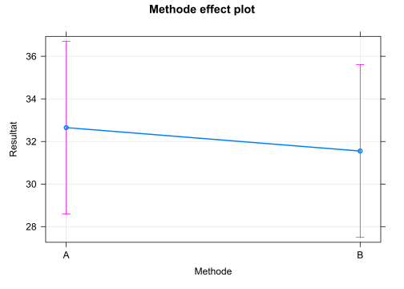
5.2.2 Höflichkeit und Grundfrequenz
library(tidyverse)
library(scales)
# detach("package:rlang", unload=TRUE)Datensatz von: Bodo Winter (Winter and Grawunder 2012; Winter 2013)
Thema: Politeness and Pitch (F0)
Tutorials:
- Lineare Regression
- Lineare Regression mit gemischten Effekten
Artikel:
The phonetic profile of Korean formal and informal speech registers
Gliederung unserer quantitativen Analyse
1. Laden der Datei
2. Kennenlernen der Daten und Säubern
3. Hypothesen
4. Test und Ergebnisse
5. Schluss
Eine einfache lineare Regression oder einen t-Test kann man auch in Excel berechnen, aber in Statistikprogrammen ist das bequemer.
5.2.2.1 Datei laden
# politeness <- read.csv("/cloud/project/data/politeness_data.csv")
politeness <- read.csv("data/politeness_data.csv")5.2.2.2 Kennenlernen der Daten und Säubern
Welche Variablen enthält die Datei?
head(politeness)## subject gender scenario attitude frequency
## 1 F1 F 1 pol 213.3
## 2 F1 F 1 inf 204.5
## 3 F1 F 2 pol 285.1
## 4 F1 F 2 inf 259.7
## 5 F1 F 3 pol 203.9
## 6 F1 F 3 inf 286.9Eine weitere Funktion, um die Datenstruktur zu betrachten:
glimpse(politeness)## Rows: 84
## Columns: 5
## $ subject <chr> "F1", "F1", "F1", "F1", "F1", "F1", "F1", "F1", "F1", "F1", ~
## $ gender <chr> "F", "F", "F", "F", "F", "F", "F", "F", "F", "F", "F", "F", ~
## $ scenario <int> 1, 1, 2, 2, 3, 3, 4, 4, 5, 5, 6, 6, 7, 7, 1, 1, 2, 2, 3, 3, ~
## $ attitude <chr> "pol", "inf", "pol", "inf", "pol", "inf", "pol", "inf", "pol~
## $ frequency <dbl> 213.3, 204.5, 285.1, 259.7, 203.9, 286.9, 250.8, 276.8, 231.~Und noch eine Übersicht, die uns noch mehr zeigt, z.B. ob bestimmte Datenzellen leer sind (NA). Die Variable frequency enthält eine leere Datenzelle (s. n_missing). Das müssen wir bei der Berechnung des Durchschnitts berücksichtigen.
library(skimr)
skim(politeness)| Name | politeness |
| Number of rows | 84 |
| Number of columns | 5 |
| _______________________ | |
| Column type frequency: | |
| character | 3 |
| numeric | 2 |
| ________________________ | |
| Group variables | None |
Variable type: character
| skim_variable | n_missing | complete_rate | min | max | empty | n_unique | whitespace |
|---|---|---|---|---|---|---|---|
| subject | 0 | 1 | 2 | 2 | 0 | 6 | 0 |
| gender | 0 | 1 | 1 | 1 | 0 | 2 | 0 |
| attitude | 0 | 1 | 3 | 3 | 0 | 2 | 0 |
Variable type: numeric
| skim_variable | n_missing | complete_rate | mean | sd | p0 | p25 | p50 | p75 | p100 | hist |
|---|---|---|---|---|---|---|---|---|---|---|
| scenario | 0 | 1.00 | 4.00 | 2.01 | 1.0 | 2.00 | 4.0 | 6.00 | 7.0 | ▇▃▃▃▇ |
| frequency | 1 | 0.99 | 193.58 | 65.54 | 82.2 | 131.55 | 203.9 | 248.55 | 306.8 | ▇▅▅▇▆ |
Am Experiment nahmen 6 Versuchspersonen teil (F1, …, M7). Von jeder Versuchsperson (subject) haben wir 14 Messpunkte (n = 14).
politeness %>%
count(subject)## subject n
## 1 F1 14
## 2 F2 14
## 3 F3 14
## 4 M3 14
## 5 M4 14
## 6 M7 14Versuchspersonen: je 3 sind weiblich bzw. männlich.
politeness %>%
count(subject, gender)## subject gender n
## 1 F1 F 14
## 2 F2 F 14
## 3 F3 F 14
## 4 M3 M 14
## 5 M4 M 14
## 6 M7 M 14Pro Verhaltensweise stehen uns 42 Messpunkte zur Verfügung, um unsere (unten folgende) Hypothese zu überprüfen.
politeness %>%
count(attitude)## attitude n
## 1 inf 42
## 2 pol 42Berechnen wir mal die Grundfrequenz!
politeness %>%
mean(frequency)## [1] NANA: Hoppla! In unserer Datenreihe fehlt eine Frequenz. Wir entfernen diese Datenzeile, um die durchschnittliche Frequenz mit mean() zu berechnen. Entfernen der leeren Datenzelle (NA) ist die einfachste Lösung.
politeness %>%
drop_na(frequency) %>%
summarise(av_freq = mean(frequency))## av_freq
## 1 193.5819Wir haben gerade die Durchschnittsfrequenz für alle Versuchspersonen berechnet. Berechnen wir sie nun getrennt nach weiblichen und männlichen Versuchspersonen!
politeness %>%
drop_na(frequency) %>%
group_by(gender) %>%
summarise(av_freq = mean(frequency))## # A tibble: 2 x 2
## gender av_freq
## <chr> <dbl>
## 1 F 247.
## 2 M 139.Erwartungsgemäß ist der Durchschnittswert bei Frauen höher als bei Männern: Frauen haben meist eine höhere Stimme als Männer.
Ein Blick auf die Durchschnittsfrequenzen bei höflicher und informeller Sprechweise: In unserer Stichprobe mit 6 Versuchspersonen (je 14 Frequenzmessungen) zeigt sich ein Unterschied von etwa 18,2 Hz, und zwar 202,59 - 184,36.
politeness %>%
drop_na() %>%
group_by(attitude) %>%
summarise(avg_freq = mean(frequency),
sd_freq = sd(frequency))## # A tibble: 2 x 3
## attitude avg_freq sd_freq
## <chr> <dbl> <dbl>
## 1 inf 203. 66.9
## 2 pol 184. 63.6# politeness %>%
# drop_na %>%
# transmute(attitude, frequency) %>%
# mutate(attitude = str_replace(attitude, "pol", "1"),
# attitude = str_replace(attitude, "inf", "0")) %>%
# mutate(attitude = parse_number(attitude))5.2.2.3 Hypothesen
\(H_0\): Der durchschnittliche Grundfrequenzverlauf (F0) bei höflichem oder informellem Sprechverhalten (attitude) ist gleich.
\(H_1\): Der durchschnittliche Grundfrequenzverlauf (F0) bei höflichem Sprechverhalten unterscheidet sich vom informellen.
Nach unserem bisherigen Wissen erwarten wir, dass unsere Daten die Hypothese \(H_1\) bestätigen werden.
Das überprüfen wir zunächst mit einem t-Test, anschließend mit einer linearen Regression.
5.2.2.4 t-Test
Zunächst ein Blick auf die Durchschnittsfrequenzen bei höflicher und informeller Sprechweise. In unserer Stichprobe mit 6 Versuchspersonen (je 14 Frequenzmessungen) zeigt sich ein Unterschied von etwa 18,2 Hz.
Gemäß Hypothese \(H_1\) ist der Unterschied nicht zufällig entstanden, sondern kann auf die Gesamtpopulation der Sprecher verallgemeinert werden.
Nicht so gemäß Hypothese \(H_0\): Der Mittelwertunterschied zwischen den Stichproben kann zufällig entstanden sein, denn wenn wir eine andere Stichprobe genommen hätten, wäre der Unterschied vielleicht gleich Null gewesen.
Mit statistischen Tests können wir diese beiden Hypothesen überprüfen. Einer davon ist der t-Test.
politeness %>%
drop_na() %>%
group_by(attitude) %>%
summarise(avg_freq = mean(frequency),
sd_freq = sd(frequency))## # A tibble: 2 x 3
## attitude avg_freq sd_freq
## <chr> <dbl> <dbl>
## 1 inf 203. 66.9
## 2 pol 184. 63.6Die Varianzen und damit auch die Standardabweichungen (sd_freq) vom Mittelwert (avg_freq) sind in beiden Gruppen (inf und pol) ungefähr gleich groß. Beim t-Test können wir dies berücksichtigen, und zwar mit der Option var.equal = TRUE. Die Option paired = FALSE besagt, dass die beiden Gruppen unabhängig vom Messzeitpunkt sind.
Der t-Test bestätigt \(H_1\) nicht (p > 0,05):
t.test(frequency ~ attitude, data = politeness,
paired = FALSE, var.equal = TRUE)##
## Two Sample t-test
##
## data: frequency by attitude
## t = 1.2718, df = 81, p-value = 0.2071
## alternative hypothesis: true difference in means between group inf and group pol is not equal to 0
## 95 percent confidence interval:
## -10.29058 46.75458
## sample estimates:
## mean in group inf mean in group pol
## 202.5881 184.3561Eine weitere Form, wie man den t-Test durchführen könnte. In den eckigen Klammern wird eine Bedingung oder Filter formuliert.
# frequencies if polite
pol = politeness$frequency[politeness$attitude == "pol"]
# frequencies if informal
inf = politeness$frequency[politeness$attitude == "inf"]
t.test(pol, inf, var.equal = TRUE)##
## Two Sample t-test
##
## data: pol and inf
## t = -1.2718, df = 81, p-value = 0.2071
## alternative hypothesis: true difference in means is not equal to 0
## 95 percent confidence interval:
## -46.75458 10.29058
## sample estimates:
## mean of x mean of y
## 184.3561 202.5881Oder eine dritte (längere) Variante, den t-Test durchzuführen:
polite <- politeness %>%
select(attitude, frequency) %>%
filter(attitude == "pol") %>%
select(-attitude)
informal <- politeness %>%
select(attitude, frequency) %>%
filter(attitude == "inf") %>%
select(-attitude)
t.test(polite, informal, var.equal = TRUE)##
## Two Sample t-test
##
## data: polite and informal
## t = -1.2718, df = 81, p-value = 0.2071
## alternative hypothesis: true difference in means is not equal to 0
## 95 percent confidence interval:
## -46.75458 10.29058
## sample estimates:
## mean of x mean of y
## 184.3561 202.5881Wenn man die Option var.equal = TRUE nicht angibt, wird der Welch-t-Test durchgeführt, d.h. das Programm geht davon aus, dass die Varianzen (bzw. Standardabweichungen) der beiden Gruppen sich signifikant unterscheiden.
5.2.2.5 Lineare Regression
Mit dem t-Test konnten wir immer nur die Wirkung einer Variablen (z.B. attitude) auf den Frequenzverlauf prüfen. Mit einem linearen Regressionsmodell können wir dagegen die gleichzeitige Wirkung mehrerer Größen auf den Frequenzverlauf herausfinden. Eine lineare Regression hat den großen Vorteil, dass man mehr als eine unabhängige Variable (Prädiktor) verwenden kann, um eine Hypothese zu testen.
Wir wählen Geschlecht (gender) und Sprechverhalten (attitude) als unabhängige Variablen, der Grundfrequenzverlauf (frequency) als abhängige Variable.
Die grundlegende Formulierung des Programmcodes (für eventuelle Vergleiche mit anderen Modellversionen haben wir dem Modell auch den neuen Namen “m1” gegeben):
m <- lm(frequency ~ gender + attitude, data = politeness)
m1 <- m
summary(m)##
## Call:
## lm(formula = frequency ~ gender + attitude, data = politeness)
##
## Residuals:
## Min 1Q Median 3Q Max
## -82.409 -26.561 -4.262 24.690 100.140
##
## Coefficients:
## Estimate Std. Error t value Pr(>|t|)
## (Intercept) 256.762 6.756 38.006 <2e-16 ***
## genderM -108.349 7.833 -13.832 <2e-16 ***
## attitudepol -19.553 7.833 -2.496 0.0146 *
## ---
## Signif. codes: 0 '***' 0.001 '**' 0.01 '*' 0.05 '.' 0.1 ' ' 1
##
## Residual standard error: 35.68 on 80 degrees of freedom
## (1 observation deleted due to missingness)
## Multiple R-squared: 0.7109, Adjusted R-squared: 0.7037
## F-statistic: 98.38 on 2 and 80 DF, p-value: < 2.2e-16Wie liest man die Regressionsergebnisse?2
Beginnen wir am Ende! Die F-Statistik am Ende besagt, dass das Regressionsmodell insgesamt gesehen einen signifikanten Beitrag zur Erklärung des Frequenzverlaufs leistet, denn der sehr kleine p-Wert (p-value: < 2.2e-16) liegt deutlich unter dem 5% Signifikanzniveau.
Die vorletzte Zeile gibt den \(R^2\)-Wert (Bestimmtheitsmaß) an, also wie viel Prozent der gesamten Varianz vom Modell erklärt wird (hier: 0,71, demnach 71 % bzw. mit adjusted \(R^2\) mehr als 70%, wenn die Korrektur berücksichtigt wird, die bei Einbezug mehr als einer unabhängigen Variable gilt).
Der Intercept ist die Stelle, an der die Frequenzkurve die y-Achse schneidet (also die Oordinate). In diesem Fall beträgt der Wert etwa 257 Hz. Der Intercept-Wert ist meistens nicht sinnvoll interpretierbar (auch hier nicht). Aber wenn wir das folgende Diagramm gender effect plot betrachten und in Gedanken die Linie von dem Punkt für die weiblichen Versuchspersonen (F) in Richtung y-Achse verlängern, dann können wir uns vorstellen, dass die Linie etwa beim Wert 257 die y-Achse schneidet. Der Intercept ist somit der (mathematisch festgelegte) Basiswert für die weiblichen Versuchspersonen (weil das Programm alphabetisch vorgeht und F im Alphabet vor M erscheint).
Der Koeffizient für genderM zeigt an, dass bei männlichen Versuchspersonen 108,35 Hz vom Basiswert der weiblichen Versuchspersonen (256,762) subtrahiert werden müssen. Das ist der Intercept für die männlichen Versuchspersonen. Der p-Wert ist erwartungsgemäß hochsignifikant (p < 2e-16).
In der nächsten Zeile folgt der Koeffizient für attitudepol (polite). Der Koeffizient (-19,553) ist negativ und muss daher vom Basiswert, dem Intercept für die weiblichen Versuchspersonen (256,762), subtrahiert werden. Demnach ist die Tonlage beim höflichen Sprechverhalten (attitudepol) um 19,55 Hz tiefer als beim informellen Sprechverhalten. Der p-Wert ist signifikant (p = 0,0146).
Grundfrequenz für Frauen bei informellem Sprechen:
256.762 + (-108.349)*0 + (-19.553)*0 = 256.762 Hz
Grundfrequenz für Frauen bei höflichem Sprechen:
256.762 + (-108.349)*0 + (-19.553)*1 = 237.209 Hz
Grundfrequenz für Männer bei informellem Sprechen:
256.762 + (-108.349)*1 + (-19.553)*0 = 148.413 Hz
Grundfrequenz für Männer bei höflichem Sprechen:
256.762 + (-108.349)*1 + (-19.553)*1 = 128.86 Hz
Durchschnittliche Grundfrequenz bei informellem Sprechen:
(256.762 + 148.413)/2 = 202.5875 Hz.
Durchschnittliche Grundfrequenz bei höflichem Sprechen:
(237.209 + 128.86)/2 = 183.0345 Hz.
Das lineare Regressionsmodell bestätigt somit die Hypothese \(H_1\): F(2;80 = 98,38; p < 0,001). Die Versuchspersonen sprechen demnach in einer tieferen Tonlage, wenn sie höflich sprechen, und zwar um ca. 19,5 Hz tiefer als wenn sie informell sprechen (p = 0,0146).
Außerdem bestätigt das Regressionsmodell (erwartungsgemäß) auch, dass die männlichen Versuchspersonen mit einer tieferen Stimme sprechen als die weiblichen, und zwar um durchschnittlich 108 Hz.
Der \(R^2\)-Wert beträgt 0,71 (d.h. etwa 71%). Das bedeutet, dass mit dem Regressionsergebnis ca. 71% der Variabilität unserer Daten erklärt wird. Das ist ein guter Wert in den Sozialwissenschaften.
Das Regressionsmodell wollen wir auch mit Hilfe Programms effects graphisch veranschaulichen.
library(effects)
allEffects(m)## model: frequency ~ gender + attitude
##
## gender effect
## gender
## F M
## 247.1035 138.7549
##
## attitude effect
## attitude
## inf pol
## 203.2408 183.6875plot(allEffects(m), multiline=TRUE, grid=TRUE, rug=FALSE, as.table=TRUE, confint=list(style="bars"), x.var = "gender")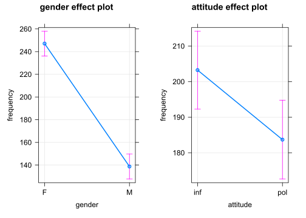
Man kann Regressionsmodelle auch mit tidyverse-Funktionen formulieren (der “.” bedeutet, dass der Datensatz “politeness” aus der vorherigen Zeile übernommen werden soll). Die tidy(()-Funktion des broom-Pakets sorgt für die Umformung in eine Tabelle.
library(broom)
politeness %>%
lm(frequency ~ attitude + gender, data = .) %>%
summary() %>%
broom::tidy()## # A tibble: 3 x 5
## term estimate std.error statistic p.value
## <chr> <dbl> <dbl> <dbl> <dbl>
## 1 (Intercept) 257. 6.76 38.0 5.75e-53
## 2 attitudepol -19.6 7.83 -2.50 1.46e- 2
## 3 genderM -108. 7.83 -13.8 6.40e-23Die unterschiedliche Tonlage bei informellem und höflichem Sprechen veranschaulichen wir noch mit einem Boxplot.
politeness %>%
ggplot(aes(attitude, frequency,
group = attitude, fill = attitude)) +
geom_boxplot() +
stat_summary(fun.y=mean, geom="point",
shape="*", size=7, color="red", fill="red") +
geom_jitter(width = 0.2) +
# geom_hline(yintercept = c(202.5),
# lty = 2, col = "darkred") + # Polite-Mittelwert
# geom_hline(yintercept = c(184.3),
# lty = 2, col = "darkgreen") + # Informal-Mittelwert
facet_wrap(~ gender)Der rote Stern markiert den Durchschnittswert der jeweiligen Gruppe, der schwarze Balken den Median (d.h. den Wert, der genau in der Mitte aller Daten der jeweiligen Gruppe liegt). Im Kasten eines Boxplots liegen 50% aller Werte, darunter liegen 25% und darüber ebenfalls 25%. Bei den Männern (M) ist zu sehen, dass der Median (der schwarze Balken) und das arithmetische Mittel (der rote Stern) nicht übereinstimmen. Das deutet auf extremere Unterschiede zwischen den männlichen Versuchspersonen (Schiefe oder Asymmetrie).
Die Schiefe (engl. skewness) oder Asymmetrie der Frequenzverteilung (Distribution) kann man in einem Histogramm oder Dichte-Diagramm (density) veranschaulichen. Das Histogram der weiblichen Versuchspersonen ist der Normalverteilung (einer Glockenform, mit den meisten Frequenzwerten in der Mitte) ähnlich, während das der männlichen deutlich schief ist.
politeness %>%
ggplot(aes(frequency, fill = attitude)) +
geom_density(alpha = 0.7) +
facet_wrap(~ gender)## Warning: Removed 1 rows containing non-finite values (stat_density).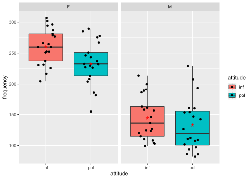
politeness %>%
ggplot(aes(frequency, fill = attitude)) +
geom_histogram(aes(y = ..count..), # density
binwidth = 50, alpha = 0.7, color = "white") +
facet_wrap(~ gender)## Warning: Removed 1 rows containing non-finite values (stat_bin).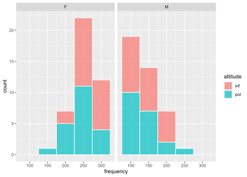
politeness %>%
filter(gender == "F") %>%
ggplot(aes(frequency)) +
geom_histogram(aes(y = ..density.., fill = attitude), # count
binwidth = 50, alpha = 0.7, color = "white") +
stat_function(
fun = dnorm,
args = list(
mean = mean(
politeness$frequency[politeness$gender == "F"], na.rm = T),
sd = sd(politeness$frequency[politeness$gender == "F"],
na.rm = T)),
col = "#1b98e0",
size = 2)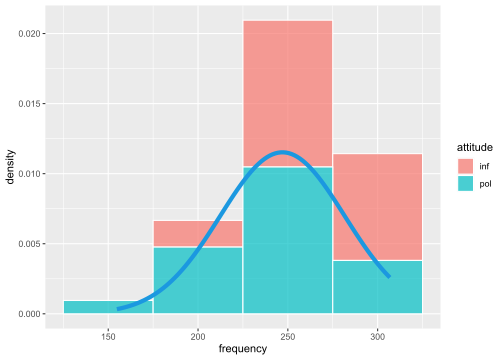
politeness %>%
filter(gender == "M") %>%
ggplot(aes(frequency)) +
geom_histogram(aes(y = ..density.., fill = attitude), # count
binwidth = 50, alpha = 0.7, color = "white") +
stat_function(
fun = dnorm,
args = list(
mean = mean(
politeness$frequency[politeness$gender == "M"], na.rm = T),
sd = sd(politeness$frequency[politeness$gender == "M"],
na.rm = T)),
col = "#1b98e0",
size = 2)## Warning: Removed 1 rows containing non-finite values (stat_bin).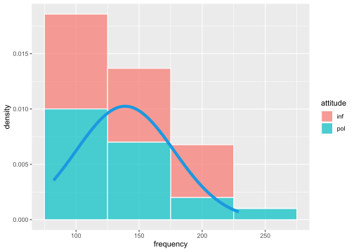
Wird das Sprechverhalten (attitude) durch das Geschlecht (gender) modifiziert (z.B. verändern Frauen ihre Tonlage beim höflichem Sprechen, Männer dagegen nicht oder kaum)? Das kann man durch Hinzufügung eines Interaktionsterms prüfen. Eine Interaktion kennzeichnet man in der Regressionsgleichung mit einem Stern zwischen den beteiligten Variablen (also wie beim Multiplizieren). Hier prüfen wir die Interaktion zwischen den beiden unabhängigen Variablen Geschlecht (gender) und Verhalten (attitude).
Die Indikatorterme attitude (informal vs. polite) und gender (female vs. male), beide also mit zwei Stufen oder levels, sind vergleichbar mit An-/Aus-Schaltern. Sie zeigen an, um welchen Wert die Frequenzkurve nach unten (bei negativem Koeffizient) oder oben (bei positivem Koeffizient) verschoben wird. Der Interaktionsterm der beiden Indikatorterme zeigt an, um welchen zusätzlichen Wert der Frequenzverlauf verändert wird. Wäre eine kontinuierliche Variable (z.B. Zeit) in der Interaktion einbezogen, dann würde der Koeffizient der Interaktion die zusätzliche Steigung (slope) der abhängigen Variable anzeigen.
m <- lm(frequency ~ attitude*gender, data = politeness)
m2 <- m
summary(m)##
## Call:
## lm(formula = frequency ~ attitude * gender, data = politeness)
##
## Residuals:
## Min 1Q Median 3Q Max
## -78.486 -27.383 -0.986 20.570 96.020
##
## Coefficients:
## Estimate Std. Error t value Pr(>|t|)
## (Intercept) 260.686 7.784 33.491 <2e-16 ***
## attitudepol -27.400 11.008 -2.489 0.0149 *
## genderM -116.195 11.008 -10.556 <2e-16 ***
## attitudepol:genderM 15.890 15.664 1.014 0.3135
## ---
## Signif. codes: 0 '***' 0.001 '**' 0.01 '*' 0.05 '.' 0.1 ' ' 1
##
## Residual standard error: 35.67 on 79 degrees of freedom
## (1 observation deleted due to missingness)
## Multiple R-squared: 0.7147, Adjusted R-squared: 0.7038
## F-statistic: 65.95 on 3 and 79 DF, p-value: < 2.2e-16Allerdings ist der p-Wert für die Interaktion in unserem Fall nicht signifikant (p = 0,3135 liegt oberhalb des 5% Signifikanzniveaus, p = 0,05). Das bedeutet, dass die Interaktion zur Erklärung des Frequenzverlaufs keinen Beitrag leistet. Daher ist es sinnvoll, den Interaktionsterm aus der Regressionsgleichung zu entfernen und nur die (signifkanten) Haupteffekte beizubehalten. Wir bevorzugen demnach immer das einfachere Modell, wenn das komplexere keinen signifikanten Erklärungsbeitrag leistet.
Mit der anova()-Funktion kann man Regressionsmodelle (hier: m1 und m2) miteinander vergleichen und prüfen, welches geeigneter ist, den Frequenzverlauf zu erklären. Modell m1 ist das Modell ohne Interaktion, Modell m2 das Modell mit Interaktionsterm.
anova(m1, m2)## Analysis of Variance Table
##
## Model 1: frequency ~ gender + attitude
## Model 2: frequency ~ attitude * gender
## Res.Df RSS Df Sum of Sq F Pr(>F)
## 1 80 101820
## 2 79 100511 1 1309.1 1.029 0.3135Der p-Wert (p = 0,3135) ist nicht signifikant. In diesem Fall bevorzugen wir das einfachere Regressionsmodell, d.h. das Modell ohne Interaktion (m1).
Mit Hilfe des Programms effects stellen wir das Regressionsmodell mit hinzugefügter Interaktion zwischen den beiden unabhängigen Variablen Geschlecht (gender) und Verhalten (attitude) auch graphisch dar.
library(effects)
allEffects(m)## model: frequency ~ attitude * gender
##
## attitude*gender effect
## gender
## attitude F M
## inf 260.6857 144.4905
## pol 233.2857 132.9800plot(allEffects(m), multiline=TRUE, grid=TRUE, rug=FALSE, as.table=TRUE, confint=list(style="bars"), x.var = "gender")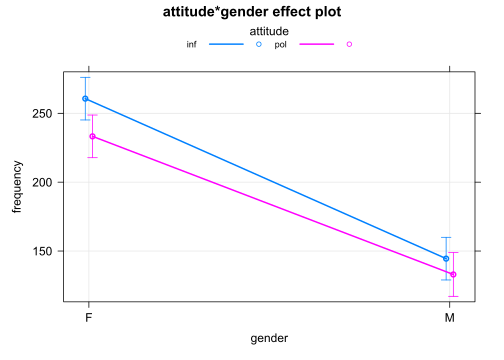
Die sich überschneidenden Konfidenzintervalle im Diagramm zeigen, dass die Durchschnittswerte keinen signifikanten Unterschied aufweisen. Außerdem gilt sowohl für die weiblichen als auch die männlichen Versuchspersonen, dass Frequenzwerte beim höflichen Sprechverhalten geringer sind. Die Interaktion liefert somit keinen signifikanten Erklärungsbeitrag. Es ist sinnvoll, nur die beiden Haupteffekte beizubehalten und die Interaktion aus dem Regressionsmodell herauszunehmen.

plot of chunk unnamed-chunk-1
Das nächste Diagramm bestätigt, dass die Variablen Geschlecht (gender) und Verhalten (attitude) mit statistischer Signifikanz die Höhe des Grundfrequnezverlaufs (frequency) beeinflussen, nicht jedoch die Interaktion beider Variablen (deren Konfidenzintervall überschreitet im Diagramm die Null-Linie).
library(parameters)
library(see)
p1 = plot(parameters(m)) +
ggplot2::labs(title = "A Dot-and-Whisker Plot")
p1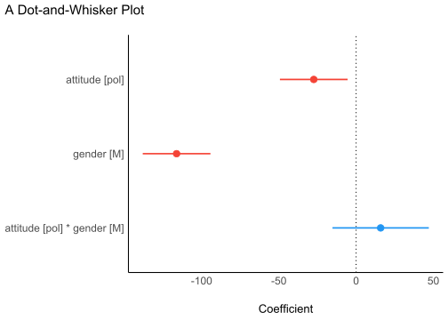
Das nächste Diagramm bestätigt, dass die Residuen (d.h. die jeweiligen Abweichungen der einzelnen Werte vom Durchschnitt) normalverteilt sind (p = 0.396, also größer als der Grenzwert 0.05). Damit ist eine der erforderlichen Bedingungen für die Durchführung einer linearen Regression erfüllt.
library(performance)
check <- check_normality(m)## OK: residuals appear as normally distributed (p = 0.396).## Warning: Non-normality of residuals detected (p = 0.016).
p2 = plot(check, type = "qq")
p2library(performance)
check <- check_normality(m, effects = "fixed")## OK: residuals appear as normally distributed (p = 0.396).## Warning: Non-normality of residuals detected (p = 0.016).
p2a = plot(check, type = "pp")
p2a\(Omega^2\) ist eine alternative Größe zu \(R^2\), womit ebenfalls die erklärte Varianz eines linearen Regressionsmodells angegeben wird. Im Diagramm ist zu sehen, dass die Variable Geschlecht (gender) den größten Beitrag leistet (fast 70%), die Variable Verhalten (attitude) ca. 5%, während die Interaktion beider Variablen keinen signifikanten Beitrag zu Erklärung der Varianz leistet (Wert liegt bei 0%).
library(effectsize)
library(see)
m <- aov(frequency ~ attitude*gender, data = politeness)
p3 = plot(omega_squared(m))
p3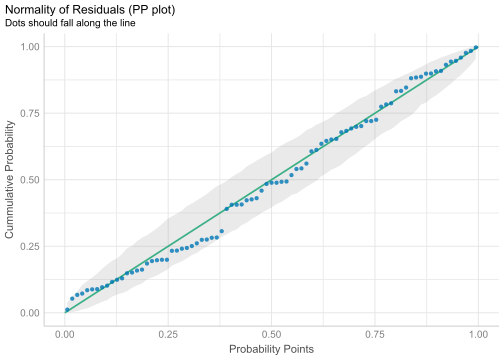
Das nächste Diagramm zeigt die Verteilung der Daten.
p4 = ggplot(politeness, aes(x = attitude, y = frequency, color = gender)) +
geom_point2() +
theme_modern()
p4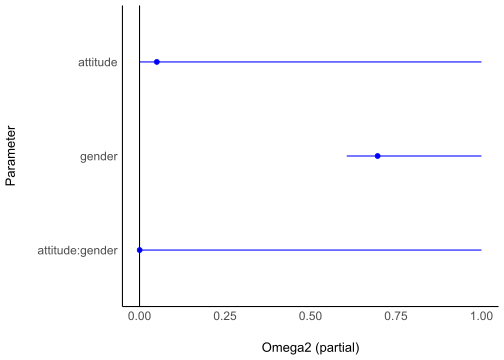
Weitere Darstellungen der Datendistribution:
p4 = ggplot(politeness,
aes(x = attitude, y = frequency, fill = gender)) +
geom_violin() +
theme_modern(axis.text.angle = 45) +
scale_fill_material_d(palette = "ice")
p4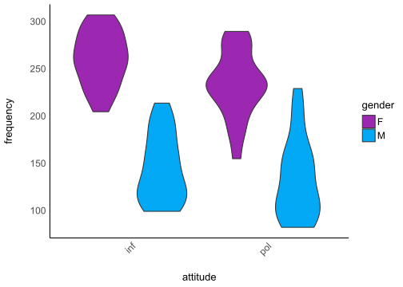
p5 = ggplot(politeness,
aes(x = attitude, y = frequency, fill = gender)) +
geom_violindot(fill_dots = "black") +
geom_jitter(width = 0.05) +
theme_modern() +
scale_fill_material_d()
p5Bedingungen für die Durchführung einer linearen Regression mit einem Befehl. Hier wählen wir das Modell ohne Interaktion (da diese nicht signifikant war).
library(performance)
m <- lm(frequency ~ attitude + gender, data = politeness)
summary(m)##
## Call:
## lm(formula = frequency ~ attitude + gender, data = politeness)
##
## Residuals:
## Min 1Q Median 3Q Max
## -82.409 -26.561 -4.262 24.690 100.140
##
## Coefficients:
## Estimate Std. Error t value Pr(>|t|)
## (Intercept) 256.762 6.756 38.006 <2e-16 ***
## attitudepol -19.553 7.833 -2.496 0.0146 *
## genderM -108.349 7.833 -13.832 <2e-16 ***
## ---
## Signif. codes: 0 '***' 0.001 '**' 0.01 '*' 0.05 '.' 0.1 ' ' 1
##
## Residual standard error: 35.68 on 80 degrees of freedom
## (1 observation deleted due to missingness)
## Multiple R-squared: 0.7109, Adjusted R-squared: 0.7037
## F-statistic: 98.38 on 2 and 80 DF, p-value: < 2.2e-16check <- check_model(m)
p6 = plot(check)
p6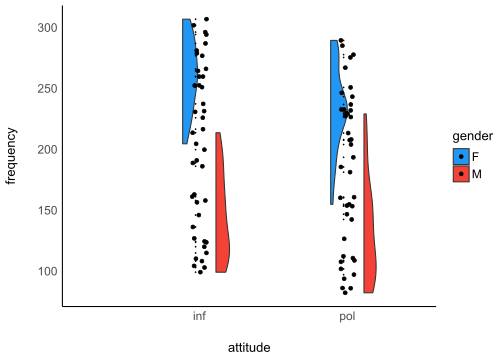
Collage mehrerer der oben einzeln gezeigten Diagramme:
plots(p1,p2,p3,p4,
n_columns = 2,
tags = paste0("B", 1:4))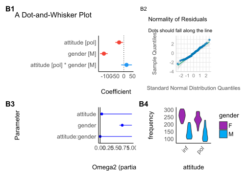
library(bayestestR)
library(rstanarm)
library(see)
set.seed(123)
m <- stan_glm(frequency ~ attitude + gender,
data = politeness, refresh = 0)
result <- hdi(m, ci = c(0.5, 0.75, 0.89, 0.95))
plot(result)
5.2.2.6 Schluss
Die Regressionsanalyse hat \(H_1\) bestätigt, d.h. die Grundfrequenz beim höflichen Sprechverhalten unterscheidet sich vom informellen Sprechen. Beim höflichen Sprechen sprachen die Versuchspersonen mit einer durchschnittlich 19,5 Hz tieferen Stimme: bei den weiblichen Versuchspersonen mehr als 27 Hz (261 - 233 Hz), bei den männlichen mehr als 11 Hz (144 - 133 Hz)).
politeness %>%
drop_na() %>%
group_by(gender, attitude) %>%
summarise(M = mean(frequency))## `summarise()` has grouped output by 'gender'. You can override using the `.groups` argument.## # A tibble: 4 x 3
## # Groups: gender [2]
## gender attitude M
## <chr> <chr> <dbl>
## 1 F inf 261.
## 2 F pol 233.
## 3 M inf 144.
## 4 M pol 133.5.2.2.7 Lineare Regression
Politeness data (B. Winter tutorial)
Programme laden
library(tidyverse)Datei laden
# LOAD
rm(list=ls(all=TRUE)) # clear memory
polite <- read.csv("data/politeness_data.csv", dec=".")Ansicht der Datenlage
head(polite)## subject gender scenario attitude frequency
## 1 F1 F 1 pol 213.3
## 2 F1 F 1 inf 204.5
## 3 F1 F 2 pol 285.1
## 4 F1 F 2 inf 259.7
## 5 F1 F 3 pol 203.9
## 6 F1 F 3 inf 286.9Variablen festlegen
polite$frequency = as.numeric(polite$frequency)
polite$scenario = as.factor(polite$scenario)
polite$subject = as.factor(polite$subject)
polite$gender = as.factor(polite$gender)
polite$attitude = as.factor(polite$attitude)Kontraste für den statistischen Test setzen
# In this session we use contr. sum contrasts
options(contrasts=c('contr.sum', 'contr.poly'))
options("contrasts")## $contrasts
## [1] "contr.sum" "contr.poly"Kontraste zurücksetzen
# To reset default settings run:
options(contrasts=c('contr.treatment', 'contr.poly'))
# (all afex functions should be unaffected by this)
# # Setting contrasts of chosen variables only
# contrasts(polite$attitude) <- contr.treatment(2, base = 1)plot of chunk unnamed-chunk-1
boxplot(frequency ~ attitude*gender,
col=c("red","green"), data = polite)
Bild speichern
# 1. Open jpeg file
jpeg("pictures/politeness_boxplot.jpg",
width = 840, height = 535)
# 2. Create the plot
boxplot(frequency ~ attitude*gender,
col=c("red","green"), data = polite)
# 3. Close the file
dev.off()## svg
## 2# Open a pdf file
pdf("pictures/politeness_boxplot.pdf")
# 2. Create a plot
boxplot(frequency ~ attitude*gender,
col=c("red","green"), data = polite)
# Close the pdf file
dev.off() ## svg
## 2# Inspect relationships between pairs of variables
# library(MASS)Inspect relationships between pairs of variables
library(psych)
pairs.panels(polite[c(2,4,5)])
Ordinary Least Squares Regression (OLS)
# model 1
m <- lm(frequency ~ gender + attitude + subject + scenario, data = polite)
summary(m)##
## Call:
## lm(formula = frequency ~ gender + attitude + subject + scenario,
## data = polite)
##
## Residuals:
## Min 1Q Median 3Q Max
## -53.673 -16.686 1.039 12.027 86.630
##
## Coefficients: (1 not defined because of singularities)
## Estimate Std. Error t value Pr(>|t|)
## (Intercept) 225.150 10.020 22.470 < 2e-16 ***
## genderM -129.857 9.606 -13.518 < 2e-16 ***
## attitudepol -19.794 5.585 -3.544 0.000707 ***
## subjectF2 26.150 9.606 2.722 0.008179 **
## subjectF3 18.700 9.606 1.947 0.055592 .
## subjectM3 66.800 9.606 6.954 1.52e-09 ***
## subjectM4 41.854 9.807 4.268 6.09e-05 ***
## subjectM7 NA NA NA NA
## scenario2 25.017 10.376 2.411 0.018537 *
## scenario3 31.025 10.376 2.990 0.003847 **
## scenario4 42.508 10.376 4.097 0.000111 ***
## scenario5 14.408 10.376 1.389 0.169351
## scenario6 1.405 10.629 0.132 0.895227
## scenario7 3.117 10.376 0.300 0.764783
## ---
## Signif. codes: 0 '***' 0.001 '**' 0.01 '*' 0.05 '.' 0.1 ' ' 1
##
## Residual standard error: 25.42 on 70 degrees of freedom
## (1 observation deleted due to missingness)
## Multiple R-squared: 0.8716, Adjusted R-squared: 0.8496
## F-statistic: 39.61 on 12 and 70 DF, p-value: < 2.2e-16# model 2
m <- lm(frequency ~ gender + attitude, data=polite)
summary(m)##
## Call:
## lm(formula = frequency ~ gender + attitude, data = polite)
##
## Residuals:
## Min 1Q Median 3Q Max
## -82.409 -26.561 -4.262 24.690 100.140
##
## Coefficients:
## Estimate Std. Error t value Pr(>|t|)
## (Intercept) 256.762 6.756 38.006 <2e-16 ***
## genderM -108.349 7.833 -13.832 <2e-16 ***
## attitudepol -19.553 7.833 -2.496 0.0146 *
## ---
## Signif. codes: 0 '***' 0.001 '**' 0.01 '*' 0.05 '.' 0.1 ' ' 1
##
## Residual standard error: 35.68 on 80 degrees of freedom
## (1 observation deleted due to missingness)
## Multiple R-squared: 0.7109, Adjusted R-squared: 0.7037
## F-statistic: 98.38 on 2 and 80 DF, p-value: < 2.2e-16library(effects)
allEffects(m)## model: frequency ~ gender + attitude
##
## gender effect
## gender
## F M
## 247.1035 138.7549
##
## attitude effect
## attitude
## inf pol
## 203.2408 183.6875plot(allEffects(m), multiline=TRUE, grid=TRUE, rug=FALSE, as.table=TRUE)
plot of chunk unnamed-chunk-1
# Save plot of the effects to disk
# 1. Open jpeg file
jpeg("pictures/politeness_lineplot.jpg",
width = 840, height = 535)
# 2. Create the plot
plot(allEffects(m), multiline=TRUE, grid=TRUE, rug=FALSE, as.table=TRUE)
# 3. Close the file
dev.off()## svg
## 2# model 3 (with interaction)
m <- lm(frequency ~ gender*attitude, data=polite)
summary(m)##
## Call:
## lm(formula = frequency ~ gender * attitude, data = polite)
##
## Residuals:
## Min 1Q Median 3Q Max
## -78.486 -27.383 -0.986 20.570 96.020
##
## Coefficients:
## Estimate Std. Error t value Pr(>|t|)
## (Intercept) 260.686 7.784 33.491 <2e-16 ***
## genderM -116.195 11.008 -10.556 <2e-16 ***
## attitudepol -27.400 11.008 -2.489 0.0149 *
## genderM:attitudepol 15.890 15.664 1.014 0.3135
## ---
## Signif. codes: 0 '***' 0.001 '**' 0.01 '*' 0.05 '.' 0.1 ' ' 1
##
## Residual standard error: 35.67 on 79 degrees of freedom
## (1 observation deleted due to missingness)
## Multiple R-squared: 0.7147, Adjusted R-squared: 0.7038
## F-statistic: 65.95 on 3 and 79 DF, p-value: < 2.2e-16library(effects)
allEffects(m)## model: frequency ~ gender * attitude
##
## gender*attitude effect
## attitude
## gender inf pol
## F 260.6857 233.2857
## M 144.4905 132.9800plot(allEffects(m), multiline=TRUE, grid=TRUE, rug=FALSE, as.table=TRUE)

plot of chunk unnamed-chunk-1
# Save plot of the effects to disk
# 1. Open jpeg file
jpeg("pictures/politeness_effects.jpg",
width = 840, height = 535)
# 2. Create the plot
plot(allEffects(m), multiline=TRUE, grid=TRUE, rug=FALSE, as.table=TRUE)
# 3. Close the file
dev.off()## svg
## 2# Open a pdf file
pdf("pictures/politeness_effects.pdf")
# 2. Create a plot
plot(allEffects(m), multiline=TRUE, grid=TRUE, rug=FALSE, as.table=TRUE)
# Close the pdf file
dev.off() ## svg
## 2# plot diagnostic diagrams
par(mfrow = c(3,2))
plot(m, which = 1) # variance of residuals vs. fitted values?
plot(m, which = 2) # normal distributed residuals?
plot(m, which = 3) # variance of residuals standardized
plot(m, which = 4) # Cook's distance (outliers / influencing data points?)
plot(m, which = 5) # Leverage vs. standardized variance of residuals
plot(m, which = 6) # Cook's distance vs. Leverage
par(mfrow = c(1,1))
plot of chunk unnamed-chunk-1
# Change of estimates if one datapoint is removed from the model
d <- dfbetas(m)
head(d) %>% as.data.frame %>% rmarkdown::paged_table()# plot the dfbetas (are there any outliers or data points with high influence?)
par(mfrow = c(1,3))
plot(d[,1], col = "orange")
plot(d[,2], col = "blue")
plot(d[,3], col = "purple")
par(mfrow = c(1,1))
plot of chunk unnamed-chunk-1
5.2.2.8 Regression mit gemischten Effekten
(Mixed effects Regression)
# The variables 'subject' and 'scenario' have been chosen as random effects
library(afex)# random intercepts model
m <- lmer(frequency ~ gender +
(1|subject) + (1|scenario),
REML=F, data=polite)
m0 <- m
summary(m)## Linear mixed model fit by maximum likelihood . t-tests use Satterthwaite's
## method [lmerModLmerTest]
## Formula: frequency ~ gender + (1 | subject) + (1 | scenario)
## Data: polite
##
## AIC BIC logLik deviance df.resid
## 816.7 828.8 -403.4 806.7 78
##
## Scaled residuals:
## Min 1Q Median 3Q Max
## -2.49969 -0.57100 -0.06373 0.60229 2.86559
##
## Random effects:
## Groups Name Variance Std.Dev.
## scenario (Intercept) 191.2 13.83
## subject (Intercept) 409.6 20.24
## Residual 751.9 27.42
## Number of obs: 83, groups: scenario, 7; subject, 6
##
## Fixed effects:
## Estimate Std. Error df t value Pr(>|t|)
## (Intercept) 246.986 13.481 7.676 18.321 1.3e-07 ***
## genderM -108.236 17.588 5.939 -6.154 0.000877 ***
## ---
## Signif. codes: 0 '***' 0.001 '**' 0.01 '*' 0.05 '.' 0.1 ' ' 1
##
## Correlation of Fixed Effects:
## (Intr)
## genderM -0.651m <- lmer(frequency ~ gender + attitude +
(1|subject) + (1|scenario),
REML=F, data=polite)
m1 <- m
summary(m)## Linear mixed model fit by maximum likelihood . t-tests use Satterthwaite's
## method [lmerModLmerTest]
## Formula: frequency ~ gender + attitude + (1 | subject) + (1 | scenario)
## Data: polite
##
## AIC BIC logLik deviance df.resid
## 807.1 821.6 -397.6 795.1 77
##
## Scaled residuals:
## Min 1Q Median 3Q Max
## -2.2958 -0.6456 -0.0776 0.5448 3.5121
##
## Random effects:
## Groups Name Variance Std.Dev.
## scenario (Intercept) 205.2 14.33
## subject (Intercept) 417.0 20.42
## Residual 637.4 25.25
## Number of obs: 83, groups: scenario, 7; subject, 6
##
## Fixed effects:
## Estimate Std. Error df t value Pr(>|t|)
## (Intercept) 256.847 13.827 8.500 18.576 3.53e-08 ***
## genderM -108.517 17.571 5.929 -6.176 0.000866 ***
## attitudepol -19.722 5.547 70.920 -3.555 0.000677 ***
## ---
## Signif. codes: 0 '***' 0.001 '**' 0.01 '*' 0.05 '.' 0.1 ' ' 1
##
## Correlation of Fixed Effects:
## (Intr) gendrM
## genderM -0.635
## attitudepol -0.201 0.004m <- lmer(frequency ~ gender*attitude +
(1|subject) + (1|scenario),
REML=F, data=polite)
m2 <- m
summary(m)## Linear mixed model fit by maximum likelihood . t-tests use Satterthwaite's
## method [lmerModLmerTest]
## Formula: frequency ~ gender * attitude + (1 | subject) + (1 | scenario)
## Data: polite
##
## AIC BIC logLik deviance df.resid
## 807.1 824.0 -396.6 793.1 76
##
## Scaled residuals:
## Min 1Q Median 3Q Max
## -2.1678 -0.5559 -0.0628 0.5103 3.3903
##
## Random effects:
## Groups Name Variance Std.Dev.
## scenario (Intercept) 205.0 14.32
## subject (Intercept) 418.8 20.47
## Residual 620.0 24.90
## Number of obs: 83, groups: scenario, 7; subject, 6
##
## Fixed effects:
## Estimate Std. Error df t value Pr(>|t|)
## (Intercept) 260.686 14.086 9.140 18.506 1.48e-08 ***
## genderM -116.195 18.392 7.094 -6.318 0.000376 ***
## attitudepol -27.400 7.684 70.881 -3.566 0.000655 ***
## genderM:attitudepol 15.568 10.943 70.925 1.423 0.159229
## ---
## Signif. codes: 0 '***' 0.001 '**' 0.01 '*' 0.05 '.' 0.1 ' ' 1
##
## Correlation of Fixed Effects:
## (Intr) gendrM atttdp
## genderM -0.653
## attitudepol -0.273 0.209
## gndrM:tttdp 0.192 -0.293 -0.702Vergleich der Modelle:
anova(m0,m1,m2)## Data: polite
## Models:
## m0: frequency ~ gender + (1 | subject) + (1 | scenario)
## m1: frequency ~ gender + attitude + (1 | subject) + (1 | scenario)
## m2: frequency ~ gender * attitude + (1 | subject) + (1 | scenario)
## npar AIC BIC logLik deviance Chisq Df Pr(>Chisq)
## m0 5 816.72 828.81 -403.36 806.72
## m1 6 807.10 821.61 -397.55 795.10 11.6178 1 0.0006532 ***
## m2 7 807.11 824.04 -396.55 793.11 1.9963 1 0.1576796
## ---
## Signif. codes: 0 '***' 0.001 '**' 0.01 '*' 0.05 '.' 0.1 ' ' 1# politeness affected pitch (χ2(1)=11.62, p=0.00065),
# lowering it by about 19.7 Hz ± 5.6 (standard errors)
# random slopes model
m <- lmer(frequency ~ gender +
(attitude + 1|subject) + (attitude + 1|scenario),
REML=F, data=polite)m00 <- m
summary(m)## Linear mixed model fit by maximum likelihood . t-tests use Satterthwaite's
## method [lmerModLmerTest]
## Formula: frequency ~ gender + (attitude + 1 | subject) + (attitude + 1 |
## scenario)
## Data: polite
##
## AIC BIC logLik deviance df.resid
## 819.6 841.4 -400.8 801.6 74
##
## Scaled residuals:
## Min 1Q Median 3Q Max
## -2.09487 -0.64641 -0.08678 0.60655 3.00531
##
## Random effects:
## Groups Name Variance Std.Dev. Corr
## scenario (Intercept) 231.844 15.226
## attitudepol 410.086 20.251 -0.40
## subject (Intercept) 378.484 19.455
## attitudepol 5.443 2.333 1.00
## Residual 628.656 25.073
## Number of obs: 83, groups: scenario, 7; subject, 6
##
## Fixed effects:
## Estimate Std. Error df t value Pr(>|t|)
## (Intercept) 253.370 13.437 7.714 18.856 9.9e-08 ***
## genderM -112.488 17.470 5.932 -6.439 0.000694 ***
## ---
## Signif. codes: 0 '***' 0.001 '**' 0.01 '*' 0.05 '.' 0.1 ' ' 1
##
## Correlation of Fixed Effects:
## (Intr)
## genderM -0.650
## optimizer (nloptwrap) convergence code: 0 (OK)
## boundary (singular) fit: see ?isSingularm <- lmer(frequency ~ gender + attitude +
(attitude + 1|subject) + (attitude + 1|scenario),
REML=F, data=polite)m01 <- m
summary(m)## Linear mixed model fit by maximum likelihood . t-tests use Satterthwaite's
## method [lmerModLmerTest]
## Formula:
## frequency ~ gender + attitude + (attitude + 1 | subject) + (attitude +
## 1 | scenario)
## Data: polite
##
## AIC BIC logLik deviance df.resid
## 814.9 839.1 -397.4 794.9 73
##
## Scaled residuals:
## Min 1Q Median 3Q Max
## -2.1946 -0.6690 -0.0789 0.5256 3.4251
##
## Random effects:
## Groups Name Variance Std.Dev. Corr
## scenario (Intercept) 182.083 13.494
## attitudepol 31.244 5.590 0.22
## subject (Intercept) 392.344 19.808
## attitudepol 1.714 1.309 1.00
## Residual 627.890 25.058
## Number of obs: 83, groups: scenario, 7; subject, 6
##
## Fixed effects:
## Estimate Std. Error df t value Pr(>|t|)
## (Intercept) 257.991 13.528 7.600 19.071 1.08e-07 ***
## genderM -110.806 17.510 5.936 -6.328 0.000759 ***
## attitudepol -19.747 5.922 7.062 -3.335 0.012354 *
## ---
## Signif. codes: 0 '***' 0.001 '**' 0.01 '*' 0.05 '.' 0.1 ' ' 1
##
## Correlation of Fixed Effects:
## (Intr) gendrM
## genderM -0.647
## attitudepol -0.105 0.003
## optimizer (nloptwrap) convergence code: 0 (OK)
## boundary (singular) fit: see ?isSingularm <- lmer(frequency ~ gender + attitude +
(attitude + 1|subject),
REML=F, data=polite)library(effects)
allEffects(m)## model: frequency ~ gender + attitude
##
## gender effect
## gender
## F M
## 247.9156 138.0861
##
## attitude effect
## attitude
## inf pol
## 203.2497 183.8414plot(allEffects(m), multiline=TRUE, grid=TRUE, rug=FALSE, as.table=TRUE)

plot of chunk unnamed-chunk-1
m <- lmer(frequency ~ gender + attitude +
(attitude + 1|scenario),
REML=F, data=polite)library(effects)
allEffects(m)## model: frequency ~ gender + attitude
##
## gender effect
## gender
## F M
## 247.1051 138.4961
##
## attitude effect
## attitude
## inf pol
## 203.2424 183.4286plot(allEffects(m), multiline=TRUE, grid=TRUE, rug=FALSE, as.table=TRUE)

plot of chunk unnamed-chunk-1
m <- lmer(frequency ~ gender*attitude +
(attitude + 1|subject) + (attitude + 1|scenario),
REML=F, data=polite)m02 <- m
summary(m)## Linear mixed model fit by maximum likelihood . t-tests use Satterthwaite's
## method [lmerModLmerTest]
## Formula:
## frequency ~ gender * attitude + (attitude + 1 | subject) + (attitude +
## 1 | scenario)
## Data: polite
##
## AIC BIC logLik deviance df.resid
## 814.9 841.5 -396.4 792.9 72
##
## Scaled residuals:
## Min 1Q Median 3Q Max
## -2.0680 -0.5620 -0.0360 0.4953 3.3021
##
## Random effects:
## Groups Name Variance Std.Dev. Corr
## scenario (Intercept) 185.5388 13.6213
## attitudepol 36.4691 6.0390 0.14
## subject (Intercept) 400.9123 20.0228
## attitudepol 0.8331 0.9127 1.00
## Residual 609.1686 24.6813
## Number of obs: 83, groups: scenario, 7; subject, 6
##
## Fixed effects:
## Estimate Std. Error df t value Pr(>|t|)
## (Intercept) 260.686 13.753 7.594 18.955 1.14e-07 ***
## genderM -116.195 18.036 6.060 -6.442 0.000636 ***
## attitudepol -27.400 7.969 21.583 -3.438 0.002394 **
## genderM:attitudepol 15.516 10.874 58.553 1.427 0.158919
## ---
## Signif. codes: 0 '***' 0.001 '**' 0.01 '*' 0.05 '.' 0.1 ' ' 1
##
## Correlation of Fixed Effects:
## (Intr) gendrM atttdp
## genderM -0.656
## attitudepol -0.194 0.159
## gndrM:tttdp 0.153 -0.234 -0.673
## optimizer (nloptwrap) convergence code: 0 (OK)
## boundary (singular) fit: see ?isSingularVergleich der Modelle:
anova(m00,m01,m02)## Data: polite
## Models:
## m00: frequency ~ gender + (attitude + 1 | subject) + (attitude + 1 | scenario)
## m01: frequency ~ gender + attitude + (attitude + 1 | subject) + (attitude + 1 | scenario)
## m02: frequency ~ gender * attitude + (attitude + 1 | subject) + (attitude + 1 | scenario)
## npar AIC BIC logLik deviance Chisq Df Pr(>Chisq)
## m00 9 819.61 841.37 -400.80 801.61
## m01 10 814.90 839.09 -397.45 794.90 6.7082 1 0.009597 **
## m02 11 814.89 841.50 -396.45 792.89 2.0023 1 0.157060
## ---
## Signif. codes: 0 '***' 0.001 '**' 0.01 '*' 0.05 '.' 0.1 ' ' 1library(lmerTest)
s <- step(m)s## Backward reduced random-effect table:
##
## Eliminated npar logLik AIC LRT Df
## <none> 11 -396.45 814.89
## attitude in (attitude + 1 | subject) 1 9 -396.46 810.92 0.0279 2
## attitude in (attitude + 1 | scenario) 2 7 -396.55 807.11 0.1827 2
## (1 | subject) 0 6 -410.45 832.90 27.7921 1
## (1 | scenario) 0 6 -402.35 816.71 11.6007 1
## Pr(>Chisq)
## <none>
## attitude in (attitude + 1 | subject) 0.9861435
## attitude in (attitude + 1 | scenario) 0.9126813
## (1 | subject) 1.351e-07 ***
## (1 | scenario) 0.0006593 ***
## ---
## Signif. codes: 0 '***' 0.001 '**' 0.01 '*' 0.05 '.' 0.1 ' ' 1
##
## Backward reduced fixed-effect table:
## Degrees of freedom method: Satterthwaite
##
## Eliminated Sum Sq Mean Sq NumDF DenDF F value Pr(>F)
## gender:attitude 1 1254.8 1254.8 1 70.925 2.0239 0.1592288
## gender 0 24310.7 24310.7 1 5.929 38.1404 0.0008664 ***
## attitude 0 8057.2 8057.2 1 70.920 12.6408 0.0006768 ***
## ---
## Signif. codes: 0 '***' 0.001 '**' 0.01 '*' 0.05 '.' 0.1 ' ' 1
##
## Model found:
## frequency ~ gender + attitude + (1 | subject) + (1 | scenario)library(LMERConvenienceFunctions)
m <- lmer(frequency ~ gender + attitude +
(attitude + 1|subject) + (attitude + 1|scenario),
REML=F, data=polite)m01 <- m
summary(m)## Linear mixed model fit by maximum likelihood . t-tests use Satterthwaite's
## method [lmerModLmerTest]
## Formula:
## frequency ~ gender + attitude + (attitude + 1 | subject) + (attitude +
## 1 | scenario)
## Data: polite
##
## AIC BIC logLik deviance df.resid
## 814.9 839.1 -397.4 794.9 73
##
## Scaled residuals:
## Min 1Q Median 3Q Max
## -2.1946 -0.6690 -0.0789 0.5256 3.4251
##
## Random effects:
## Groups Name Variance Std.Dev. Corr
## scenario (Intercept) 182.083 13.494
## attitudepol 31.244 5.590 0.22
## subject (Intercept) 392.344 19.808
## attitudepol 1.714 1.309 1.00
## Residual 627.890 25.058
## Number of obs: 83, groups: scenario, 7; subject, 6
##
## Fixed effects:
## Estimate Std. Error df t value Pr(>|t|)
## (Intercept) 257.991 13.528 7.600 19.071 1.08e-07 ***
## genderM -110.806 17.510 5.936 -6.328 0.000759 ***
## attitudepol -19.747 5.922 7.062 -3.335 0.012354 *
## ---
## Signif. codes: 0 '***' 0.001 '**' 0.01 '*' 0.05 '.' 0.1 ' ' 1
##
## Correlation of Fixed Effects:
## (Intr) gendrM
## genderM -0.647
## attitudepol -0.105 0.003
## optimizer (nloptwrap) convergence code: 0 (OK)
## boundary (singular) fit: see ?isSingular# Check model asumptions
mcp.fnc(m)

plot of chunk unnamed-chunk-1
fligner.test(frequency ~ attitude, polite)##
## Fligner-Killeen test of homogeneity of variances
##
## data: frequency by attitude
## Fligner-Killeen:med chi-squared = 0.21737, df = 1, p-value = 0.6411fligner.test(frequency ~ gender, polite)##
## Fligner-Killeen test of homogeneity of variances
##
## data: frequency by gender
## Fligner-Killeen:med chi-squared = 0.7388, df = 1, p-value = 0.39shapiro.test(polite$frequency)##
## Shapiro-Wilk normality test
##
## data: polite$frequency
## W = 0.94456, p-value = 0.001347which(is.na(polite$frequency)) ## [1] 39# delete NA from data frame in row 39
polite1 <- polite[-39,]
# Remove outliers
freqout <- romr.fnc(m, polite1, trim=2.5)## n.removed = 1
## percent.removed = 1.204819freqout$n.removed## [1] 1freqout$percent.removed## [1] 1.204819freqout <- freqout$data
attach(freqout)# update model
m <- lmer(frequency ~ gender + attitude +
(attitude + 1|subject) + (attitude + 1|scenario),
REML=F, data=freqout)m01 <- m
summary(m)## Linear mixed model fit by maximum likelihood . t-tests use Satterthwaite's
## method [lmerModLmerTest]
## Formula:
## frequency ~ gender + attitude + (attitude + 1 | subject) + (attitude +
## 1 | scenario)
## Data: freqout
##
## AIC BIC logLik deviance df.resid
## 790.9 815.0 -385.5 770.9 72
##
## Scaled residuals:
## Min 1Q Median 3Q Max
## -2.49611 -0.56183 -0.04681 0.55860 2.73929
##
## Random effects:
## Groups Name Variance Std.Dev. Corr
## scenario (Intercept) 205.28012 14.3276
## attitudepol 0.01369 0.1170 1.00
## subject (Intercept) 410.89205 20.2705
## attitudepol 0.11135 0.3337 1.00
## Residual 518.42987 22.7691
## Number of obs: 82, groups: scenario, 7; subject, 6
##
## Fixed effects:
## Estimate Std. Error df t value Pr(>|t|)
## (Intercept) 258.411 13.640 7.931 18.946 6.91e-08 ***
## genderM -111.647 17.423 5.936 -6.408 0.000711 ***
## attitudepol -22.391 5.045 68.398 -4.438 3.39e-05 ***
## ---
## Signif. codes: 0 '***' 0.001 '**' 0.01 '*' 0.05 '.' 0.1 ' ' 1
##
## Correlation of Fixed Effects:
## (Intr) gendrM
## genderM -0.639
## attitudepol -0.164 0.008
## optimizer (nloptwrap) convergence code: 0 (OK)
## boundary (singular) fit: see ?isSingular# Re-Check model asumptions
mcp.fnc(m)

plot of chunk unnamed-chunk-1
fligner.test(frequency ~ attitude, freqout)##
## Fligner-Killeen test of homogeneity of variances
##
## data: frequency by attitude
## Fligner-Killeen:med chi-squared = 0.34994, df = 1, p-value = 0.5541fligner.test(frequency ~ gender, freqout)##
## Fligner-Killeen test of homogeneity of variances
##
## data: frequency by gender
## Fligner-Killeen:med chi-squared = 0.25815, df = 1, p-value = 0.6114shapiro.test(freqout$frequency)##
## Shapiro-Wilk normality test
##
## data: freqout$frequency
## W = 0.9441, p-value = 0.001373